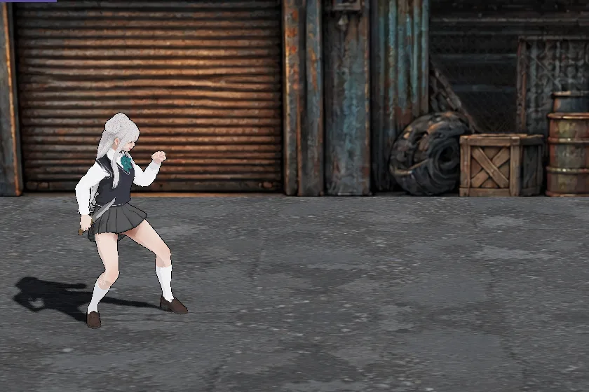
移動移動
左スティックWASD
左右で進み、上下で奥行きを移る。サブマシンガン・ショットガンを持つとライフルの構えで歩く。
素手の枠が無く、ナイフ・サブマシンガン・ショットガンで戦う。× は蹴りとタックル、敵に触れれば自動でつかむ。 武器の持ち替え順は ナイフ → サブマシンガン → ショットガン → ナイフ。動きはすべて 1 面で実際のボタン入力を流して撮ったもの（20 コマ/秒）。
| □J | 武器を使う（パンチは無い）／つかみ中は投げ／敵の振りかぶり中はカウンタータックル |
| ×K | 正面 1.3 m 以内に敵がいればタックル、いなければ蹴り／つかみ中はタックル／倒れた敵が近ければ追い打ち |
| R2U | 武器を使う（サブマシンガンは押している間連射） |
| L2R | リロード |
| L1Tab | 武器の持ち替え |
| R1Space | 回避（飛び込み前転） |
| △O | 手りゅう弾 |
| ○E | ヘリの機銃掃射 |
| 左スティックWASD | 敵へ歩いて触れると自動でつかむ |

左右で進み、上下で奥行きを移る。サブマシンガン・ショットガンを持つとライフルの構えで歩く。
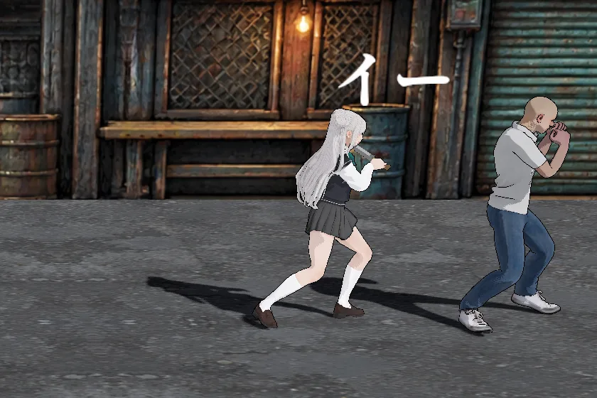
MMA キック（1,400） → マルテーロ（2,000） → 回転蹴り（3,000） → サイドキック（3,600） → マルテーロ（締め）（4,200）。正面 1.3 m 以内に敵がいると × はタックルになるので、蹴りはそれより離れた相手へ出る（出したあとの × は続きの蹴りになる）。壁際（画面の端）に追い込んだ敵には 5 段すべて当たる（撮影は 1.35 m 先の敵の真後ろが画面の端）。4・5 段目は届く距離が短く、敵が下がると当たらない。ミカゼはパンチが無く、□ は常に武器を使う。× の蹴りは武器を持っていても出る。
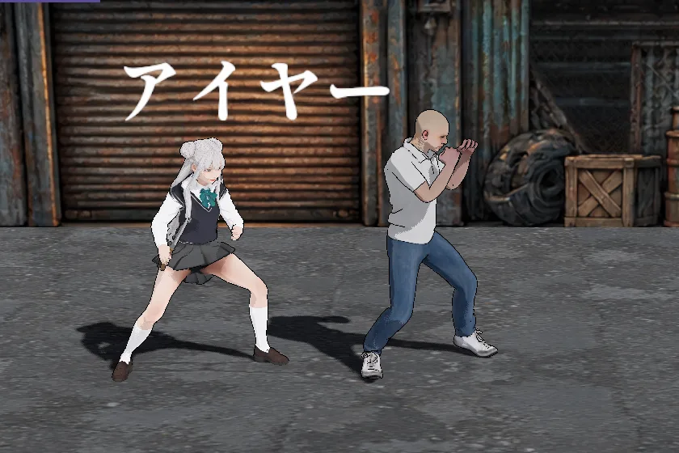
開始時の武器。R2 か □ を続けて押すと 4 段まで繋がる。3 段目の突きは前方 2.2 m 以内の敵へ詰めて刺し、刃を体に留める。
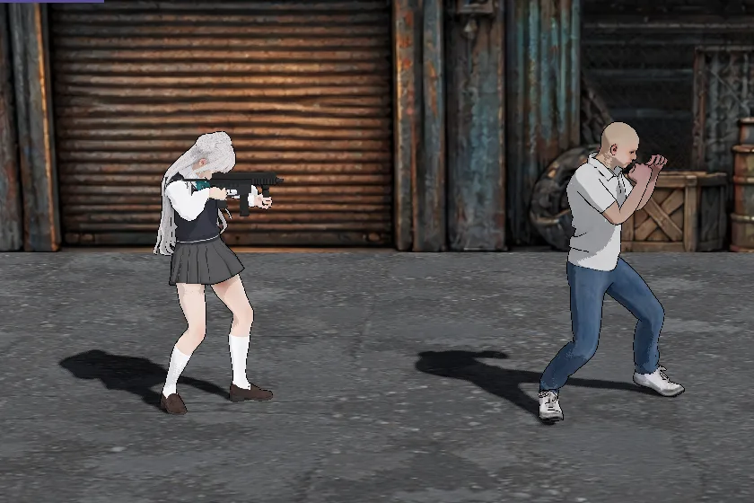
L1 で ナイフ → サブマシンガン → ショットガン → ナイフ と持ち替える。R2 を押している間、連射する（□ は 1 回に 1 発）。L2 でリロード。
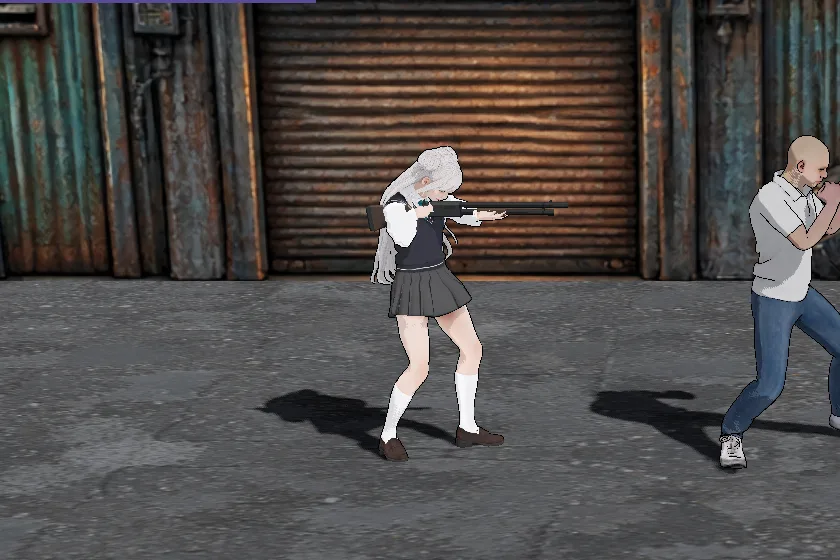
1 回で散弾 6 発を撃つ。近いと同じ敵に何発も当たる。撃つたびにポンプを引く。
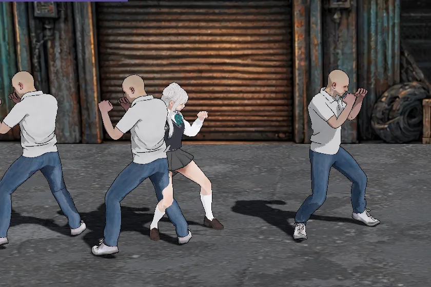
正面 0.8 m 以内（奥行き差 0.6 m 以内）の敵へ歩いて触れると自動でつかむ。つかんでいる間（つかむ途中も含む）に □ で背中側へ投げる。逆方向へ 0.2 秒入れる・被弾・2 秒経過で放す。
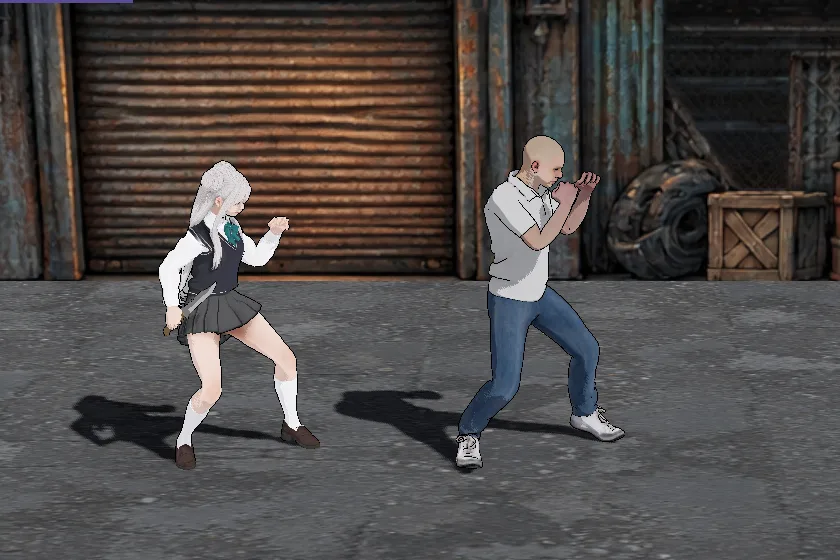
つかんでいる間の × でタックルへ移る。押し倒して顔を殴り続ける（下のタックルと同じ）。
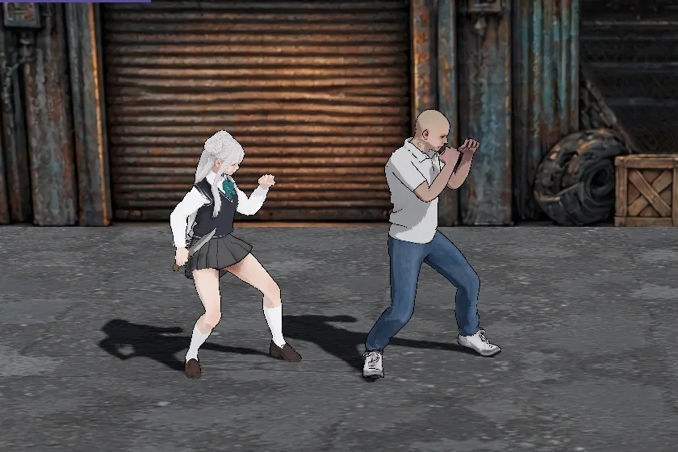
正面 1.3 m 以内（奥行き差 0.6 m 以内）の敵へ ×。つかまずに突っ込み、押し倒して顔を右・左と殴り続ける。敵の HP が尽きるまで（最大 12 発）。ボス・倒れている敵には出ない。
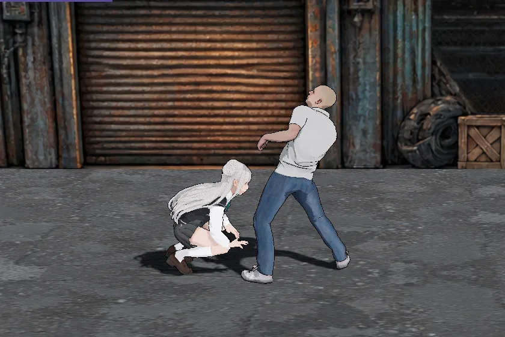
敵が赤い輪郭で振りかぶっている間に、正面 1.3 m 以内で □。武器を使う代わりにタックルが出て、敵の攻撃を止める。
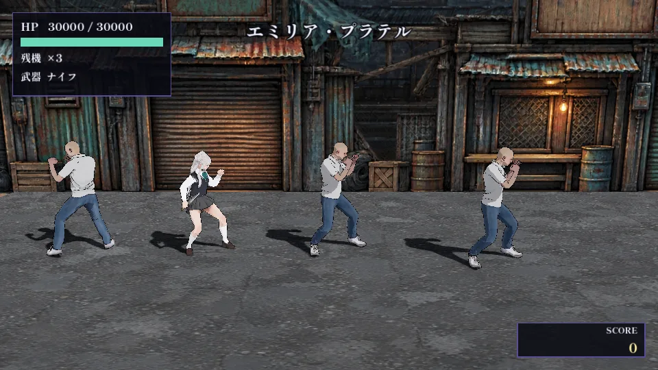
手りゅう弾を投げてから、脚を回しながら、回避のために、真上へ上がって周りの敵を蹴る。画面の上へ抜けたあと、元の場所の真下から上がってきて止まる。着地後に手りゅう弾が爆発し、画面に映っている敵を倒す。ミカゼ自身も爆風を受けて倒れる。
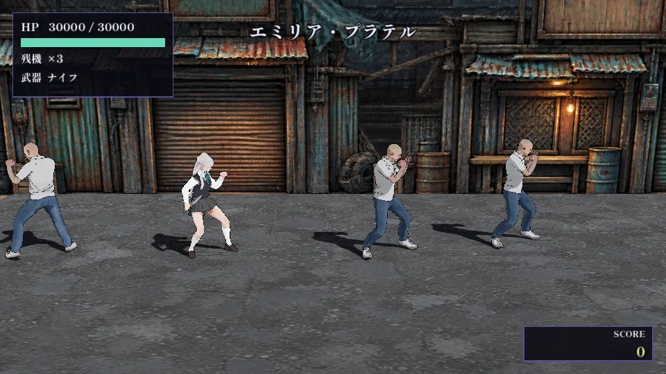
発煙筒を置き、左上からヘリを呼ぶ。掃射が画面を左から右へなぞり、画面内にいる者はミカゼ自身も相方も含めて倒れる。ミカゼは踊りの回復を持たない。
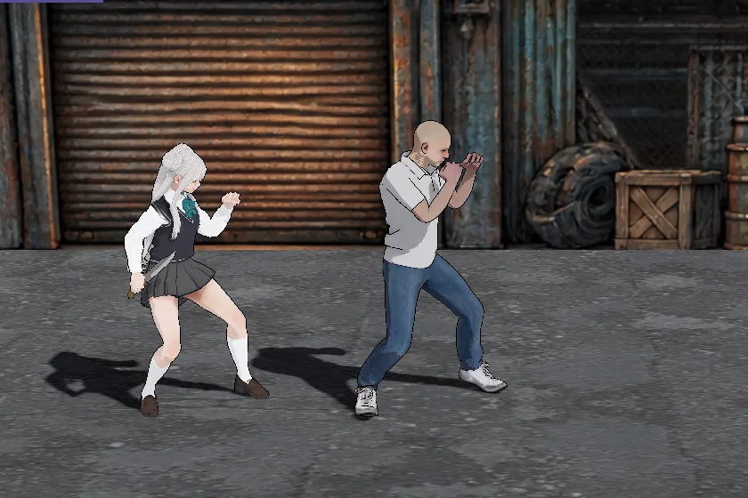
向いている側へ飛び込んで前転する。転がっている間はずっと無敵。
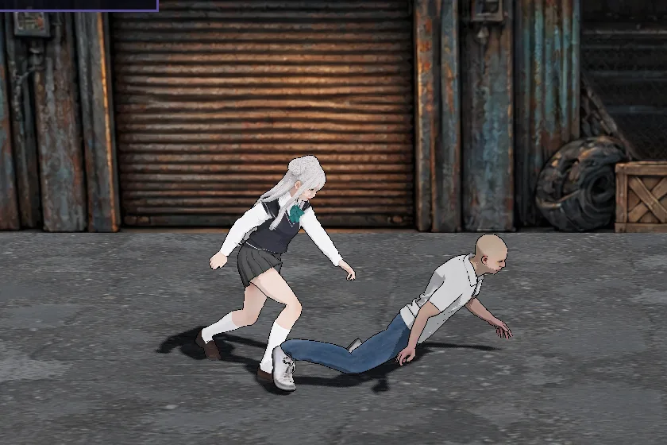
倒れて寝ている敵の頭が、向いている側 1.6 m 以内（後ろは 0.3 m まで）にあるときの ×。助走して蹴る。タックルより先に出る。× を押すたびに追い打ちを行う。